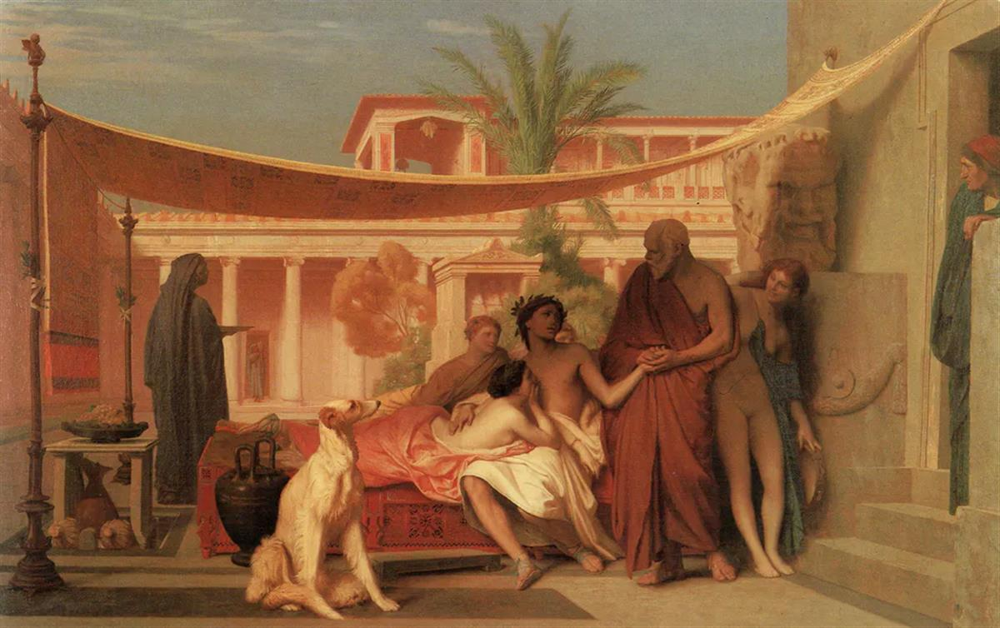
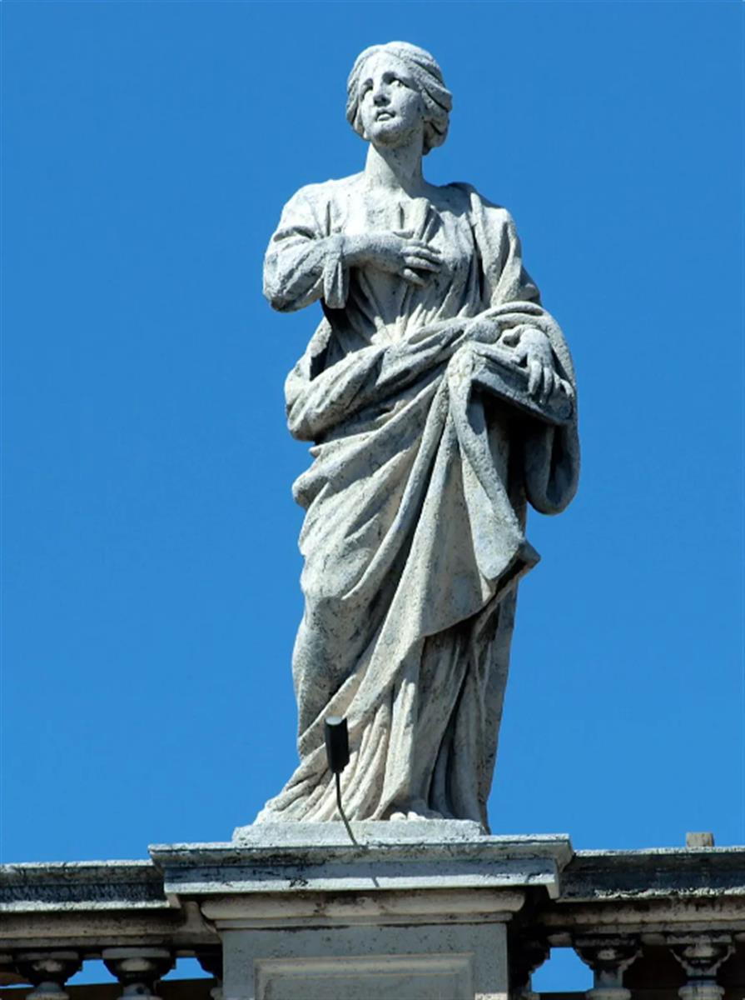
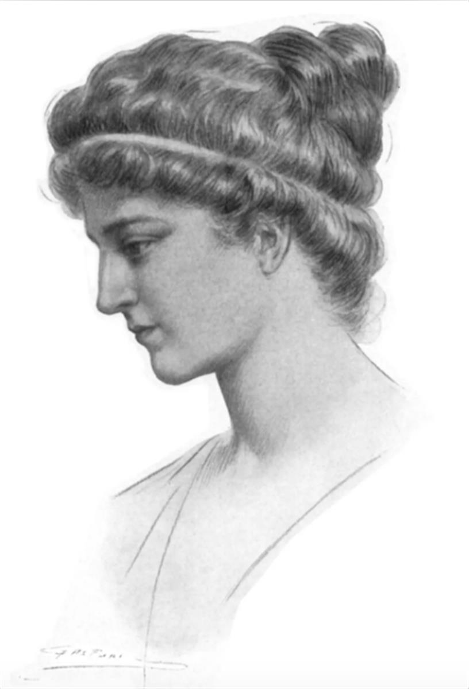

Michel Corneille the Younger: Aspasia surrounded by Greek philosophers. Wikimedia Commons
Michel Corneille the Younger: Aspasia surrounded by Greek philosophers. Wikimedia Commons
{kind=link}
Author
Research Fellow, Institute for Religion and Critical Inquiry, Australian Catholic University
Wise women: 6 ancient female philosophers you should know about
March 7, 2021 7.09pm GMT
When we conjure up ancient philosophers the image that springs to mind might be a bald Socrates discoursing with beautiful young men in the sun, or a scholarly Aristotle lecturing among cool columns.
But what about Aspasia, the foreign mistress of the foremost politician in Athens who gave both political and erotic advice? Or Sosipatra, mystic, mother and Neoplatonist who was a more popular teacher than her husband, Eustathius?
Women also shaped the development of philosophy. Although their writings, by and large do not survive, their verbal teaching made a significant impact on their contemporaries, and their voices echo through the ages.
More than two millennia later, intelligent, verbal women still struggle to have their own voices heard. So here are six ancient female philosophers you should know about.
Read more: How women historians smashed the glass ceiling
1. Aspasia of Miletus
Aspasia of Miletus (most active around 400 BCE) was the most famous woman in Classical Athens — or should we say infamous? Although a foreigner, she became the mistress of Pericles, the leader of Athens at the beginning of the Peloponnesian War.
She was not only remembered for her captivating beauty, but also for her captivating mind. Socrates himself called Aspasia his teacher and relates he learned from her how to construct persuasive speeches. After all, he tells us, she wrote them for Pericles.
She plays a verbal role in at least three philosophical dialogues written by students of Socrates: Plato’s Menexenus and the fragmentary Aspasia dialogues by Aeschines and Antisthenes.

Socrates seeking Alcibiades in the House of Aspasia by Jean-Leon Gerome (1861). Wikiart
2. Clea
Clea (most active around 100 CE) was a priestess at Delphi — a highly esteemed political and intellectual role in the ancient world. The religious practitioners at the shrine received frequent requests from world leaders for divine advice about political matters. Clea was part of this political-religious system, but she believed in the primary importance of philosophy.
She found many opportunities for in-depth philosophical conversations with Plutarch, the most famous intellectual of his time. Plutarch tells us in the prefaces to On the Bravery of Women and On Isis and Osiris how these invigorating conversations on death, virtue and religious history inspired his own work.
Read more: Hidden women of history: the priestess Pythia at the Delphic Oracle, who spoke truth to power
3. Thecla
When she first appears on the scene in the Acts of Paul and Thecla, Thecla (most active around 1st century CE) is leading a normal middle class life, sequestered at home and about to make an advantageous marriage. But leaning out of her balcony, she hears the dynamic preaching of Paul and decides on a radically different path.
She follows Paul around, resists a variety of amorous advances and survives being thrown to carnivorous seals in the arena. Finally, she is confirmed as a teacher in her own right and begins an illustrious career. Although it’s been speculated Thecla never really existed, her legend inspired many women to pursue a life of philosophy.
Some 250 years later, Methodius of Olympus wrote a philosophical dialogue full of women, with Thecla as the star participant, and Macrina (see below) was given a family nickname of Thecla, inspired by her philosophical and religious mission.
4. Sosipatra
Sosipatra (most active around 4th century CE) lived the dream: she had a successful teaching career along with a content family life. After an education in mysticism by foreigners, Sosipatra became a respected teacher in the Neoplatonic tradition, interpreting difficult texts and mediating divine knowledge.
She was surrounded by male experts, one of whom was her husband Eustathius. But according to Eunapius’ biography in his Lives of the Philosophers, her fame was greater than any of theirs, and students far preferred her inspiring teaching
5. Macrina the Younger

Saint Macrina on the colonnade of St Peter’s square.Wikimedia Commons
Macrina (circa 330-379 CE) was the oldest of ten in an expansive, influential well-educated Christian family in Cappadocia.
She kept the family together through her sharp mind, devout soul and strong will, ultimately transforming her ancestral estate into a successful community of male and female ascetics.
The latter depicted a conversation about death between the siblings as Macrina lay dying, in which she displays wide knowledge in philosophy, scripture and the physical sciences.Her brother, Gregory of Nyssa, commemorated her wisdom both in a biography Life of Macrina and also in a philosophical dialogue On the Soul and Resurrection.
6. Hypatia of Alexandria

A portrait of Hypatia by Jules Maurice Gaspard, originally the illustration for Elbert Hubbard’s 1908 fictional biography. Wikimedia Commons
{kind=link}
Most famous for her dramatic death at the hands of a Christian mob, Hypatia (circa 355–415 CE) was a Neoplatonic teacher admired for her mathematical and astronomical works.
One of her successful students, the Christian bishop Synesius, wrote glowing letters to her, exchanging information not only about philosophy but also about obscure mathematical instruments..
She edited her father Theon’s astronomical commentary, which he acknowledged at publication.
Recalling the wisdom of ancient women both expands our view of history and reminds us of the gendered elements of modern complex thought.
This is particularly true in the field of philosophy, which consistently rates as one of the most gender-imbalanced in the humanities in modern universities.
The ancient world found space to include women’s voices in philosophy, and so must we.
Further reading: for Aspasia: Plato’s Menexenus and Plutarch’s Life of Pericles; for Clea: Plutarch’s On the Bravery of Women and On Isis and Osiris; for Thecla: the anonymously written The Acts of Paul and Thecla and Methodius’ Symposium; for Sosipatra: Eunapius’ Lives of the Philosophers; for Hypatia: the letters of Synesius of Cyrene and Socrates Scholasticus’ Church History.
SOURCE: THE CONVERSATION